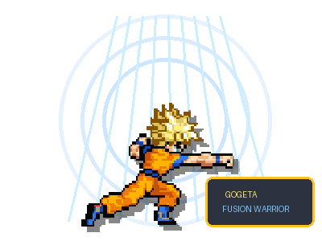

INUYASHA · DEMON TOURNAMENT × GOGETA
오지터 참전 · 1대1 대전
링크나 QR로 친구 초대하기
호스트의 초대 링크 → 참가자의 응답 링크, 한 번씩 보내면 됩니다. 휴대폰에서는 QR을 스캔해 참가할 수 있습니다.
별도 방·신호 교환·중계 서버 없이 두 브라우저가 직접 통신합니다. 공개 STUN은 직접 연결 가능한 주소를 찾는 데만 사용하며 게임 데이터는 중계하지 않습니다. 일부 공유기/NAT에서는 여전히 연결이 막힐 수 있어 모든 네트워크의 연결을 보장하지 않습니다. 방 번호 6자리만으로는 참가할 수 없습니다.
호스트 방에 응답 전달
방을 만든 탭을 계속 열어 두세요. 아래 링크를 복사해 그 방 화면의 응답 입력란에 붙여 넣어도 됩니다.
링크·QR로 연결
방 번호
최대 5장 · 같은 종류를 양쪽에 지급합니다.
ON이면 각 캐릭터의 전용카드 1장을 별도로 지급합니다.
연결 기능을 불러오는 중입니다. 잠시 기다려 주세요.
犬
원래 게임 그대로, 오지터와 함께.

1P · 오지터VS
2P · 오지터